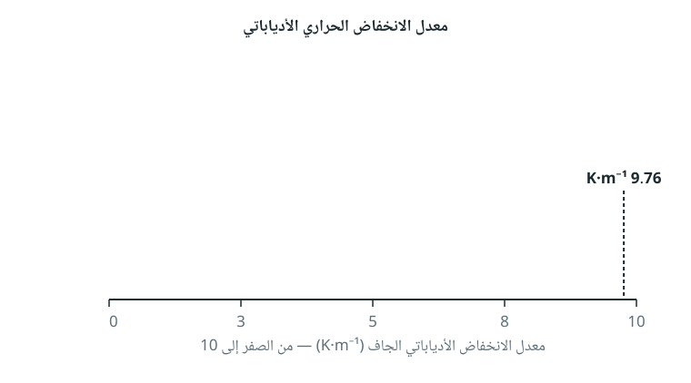

معدل الانخفاض الحراري الأدياباتي
Adiabatic lapse rate
معدل الانخفاض الحراري الأدياباتي هو معدل انخفاض حرارة كتلة هواء صاعدة بلا تبادل حراري مع محيطها: Γ_d = g/c_p ≈ 9.8 K/km للهواء الجاف. يفسر تكوّن السحب والاستقرار الجوي وارتفاع الجبال الباردة.
حين تصعد كتلة هواء، ينخفض ضغطها فتتمدد وتبرد. وإذا لم يحدث تبادل حراري مع الهواء المحيط، كان التبريد أدياباتياً. ومعدله للهواء الجاف: Γ_d = g/c_p = 9.806 65/1005 = 9.76×10⁻³ K/m، أي 9.76 K لكل كيلومتر. وإذا تكثف بخار الماء في الكتلة، تحررت حرارة كامنة فأبطأ التبريد إلى نحو 6 K/km، وهو المعدل الرطب. مثال: كتلة هواء جاف عند 20.0 °C على ارتفاع 500 m تصعد إلى 2500 m: تنخفض حرارتها 9.76×2.00 = 19.5 K إلى 0.5 °C.
كيف تعمل الظاهرة؟
الكتلة الصاعدة تنتقل إلى ضغط أقل، فتتمدد. والتمدد يبذل شغلاً على الهواء المحيط، والطاقة اللازمة لهذا الشغل تؤخذ من الطاقة الداخلية للهواء، فتنخفض حرارته. وهذا ما يعبّر عنه القانون الأول للديناميكا الحرارية في عملية أدياباتية. وكلما كانت الحرارة النوعية أكبر، كان التبريد أقل لكل متر. ولهذا يكون معدل الانخفاض للهواء الجاف أعلى من الرطب، لأن التكثف يعيد جزءاً من الطاقة.
العلاقة بالأرقام
Γ_d = g/c_p = 9.806 65/1005 = 9.76×10⁻³ K/m = 9.76 K/km. مثال: صعود 2000 m → تبريد 9.76×2.00 = 19.5 K. ومن 20.0 °C إلى 0.5 °C. والعلاقة العامة: T₂ = T₁·(P₂/P₁)^((γ−1)/γ) مع γ = 1.40، فالهبوط من 950 hPa إلى 750 hPa يعطي T₂ = 293.15×(750/950)^0.2857 = 293.15×0.9375 = 274.8 K.
مفاهيم متقاربة
يُفرَّق بين المعدل الأدياباتي والمعدل البيئي: الأول لكتلة متحركة، والثاني للهواء المحيط، ومقارنتهما تحدد الاستقرار. ويُفرَّق بين الجاف والرطب: الجاف 9.76 K/km والرطب نحو 6 K/km. ويُفرَّد بين الأدياباتي والانقلاب الحراري، حيث الثاني ارتفاع حرارة مع الارتفاع. وأخيراً يُفرَّق بين المعدل في الغلاف السفلي والمعدل في الستراتوسفير، حيث يسود الإشعاع لا الحمل.
حدود التطبيق
المعدل يفترض هواءً جافاً وغير مشبع، فإذا تكثف البخار تغيّر المعدل. ولا يصف الطبقات التي فيها تبادل حراري قوي بالإشعاع. ولا يصلح في الغلاف العلوي حيث يسيطر الإشعاع والتوصيل الجزيئي. ولا يُستعمل في حساب الاستقرار دون مقارنته بالمعدل البيئي المقاس بالبالونات.

| الكمية | القيمة | المصدر |
|---|---|---|
| معدل الانخفاض الأدياباتي الجاف | 9.76×10⁻³ K·m⁻¹ | [1] |
| تبريد كتلة هواء صاعدة 2000 m | 19.5 K | [1] |
المصادر
- 1 CODATA Value: molar gas constant — NIST — CODATA 2022 recommended values (2024). physics.nist.gov/cgi-bin/cuu/Value?r · اطُّلع عليه 2026-11-22
- 2 The International System of Units (SI), 9th edition (2019) — BIPM — Bureau International des Poids et Mesures (2019). www.bipm.org/en/publications/si-brochure · اطُّلع عليه 2026-11-22
- 3 The International System of Units (SI), 9th edition (2019) — BIPM — Bureau International des Poids et Mesures (2019). www.bipm.org/en/publications/si-brochure · اطُّلع عليه 2026-11-22
استشهد بهذا المصطلح
الصيغتان مبنيتان من بيانات الصفحة نفسها: العنوان والتاريخ ورابط النسخة المنشورة.
معدل الانخفاض الحراري الأدياباتي — Adiabatic lapse rate. (2026). ديوان المعرفة — انفراد. https://infiradev.com/diwan/terms/term-adiabatic-lapse-rate.html
@misc{term-adiabatic-lapse-rate2026,
title = {معدل الانخفاض الحراري الأدياباتي},
titleaddon = {Adiabatic lapse rate},
howpublished = {{ديوان المعرفة — انفراد} — مرجع علمي عربي},
year = {2026},
url = {https://infiradev.com/diwan/terms/term-adiabatic-lapse-rate.html},
urldate = {2026-11-26},
note = {مراجعة علمية: hermes (مراجعة معتمدة 2026-11-26)}
}
راجعه: hermes (مراجعة معتمدة 2026-11-26) · 2026-11-26 · آخر تحديث 2026-11-22